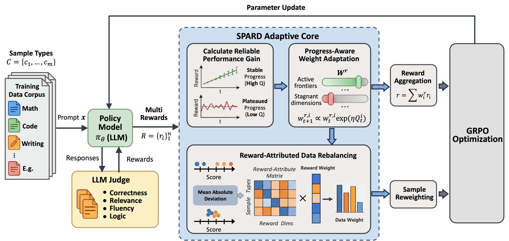

Progress-Aware Weight Adaptation updates multi-objective reward weights.
arXiv 2026
SPARD: Self-Paced Curriculum for RL Alignment via Integrating Reward Dynamics and Data Utility
SPARD adapts reward weights and data weights during RL alignment so post-training can respond to non-stationary reward dynamics and heterogeneous data utility.
Xuyang Zhi, Peilun Zhou, Chengqiang Lu, Hang Lv, Yiwei Liang, Rongyang Zhang, Yan Gao, Yi Wu, Yao Hu, Hongchao Gu, Defu Lian, Hao Wang, and Enhong Chen. SPARD: Self-Paced Curriculum for RL Alignment via Integrating Reward Dynamics and Data Utility. arXiv:2604.07837, 2026.

1. Method At A Glance
SPARD adapts reward weights and data weights during RL alignment so post-training can respond to non-stationary reward dynamics and heterogeneous data utility.
Reward-Attributed Data Rebalancing computes data weights from reward importance.
Released scripts use a configurable judge model endpoint.
2. Code And Usage
Start from the repository commands below, then follow README details for data paths, model checkpoints, and evaluation outputs.
export JUDGE_MODEL=<MODEL_NAME>
export JUDGE_API_KEY=<YOUR_API_KEY>
export JUDGE_API_BASE=<API_BASE_URL>
bash scirpts/spard.sh3. Repository Notes
Paper
Identity firstREADME and this page expose paper links, code links, and citation in the first screen.
Code
Runnable pathUsage instructions point to the maintained scripts without changing model behavior.
Assets
Visual summaryFigures are stored under docs/assets/ so GitHub Pages can serve them reliably.
4. Citation
@misc{zhi2026spard,
title = {SPARD: Self-Paced Curriculum for RL Alignment via Integrating Reward Dynamics and Data Utility},
author = {Zhi, Xuyang and Zhou, Peilun and Lu, Chengqiang and Lv, Hang and Liang, Yiwei and Zhang, Rongyang and Gao, Yan and Wu, Yi and Hu, Yao and Gu, Hongchao and Lian, Defu and Wang, Hao and Chen, Enhong},
year = {2026},
eprint = {2604.07837},
archivePrefix = {arXiv},
url = {https://arxiv.org/abs/2604.07837}
}